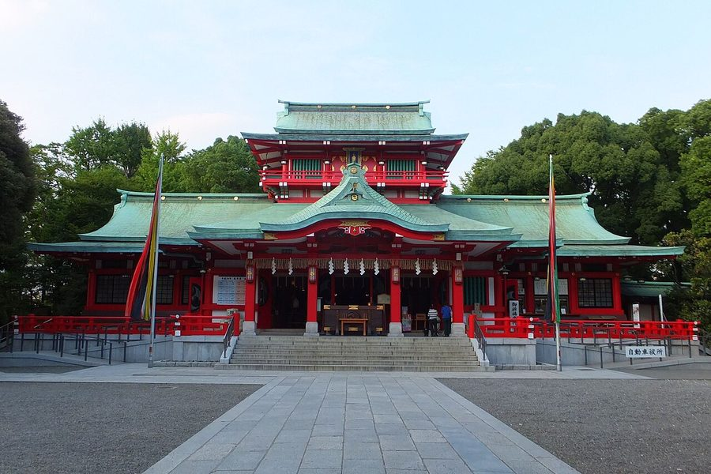
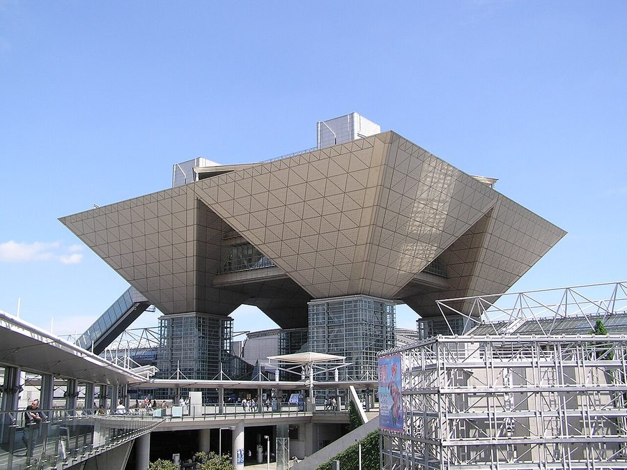
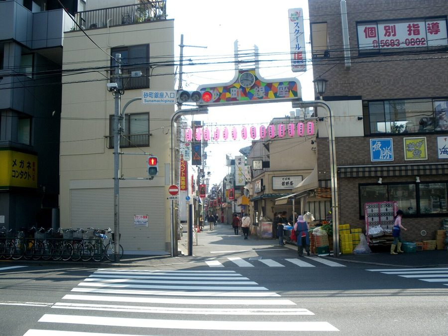
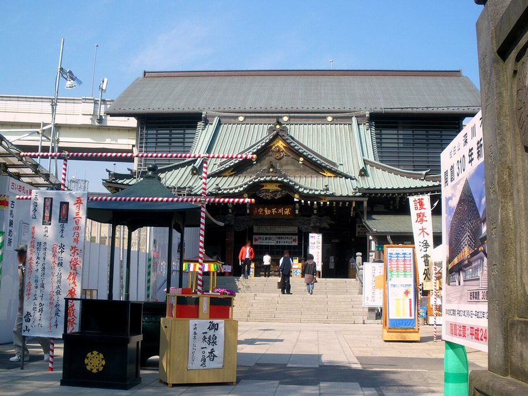

東京都江東区のソフトクリーム・ジェラート・かき氷（21件）
寄り道スポット検索アプリ「ヨッテコ」の収録データから、東京都江東区のソフトクリーム・ジェラート・かき氷を営業時間・料金つきで一覧にしました（2026年8月時点）。
最も遅くまで開いているのはSweets Gelato HARU（23:00まで）。
東京都江東区はどんなまち？
数字で見る🔍東京都江東区
まちの横顔




- 地形と水辺: 隅田川と荒川に挟まれた江東デルタの南部を占め、南は東京湾に面しています。運河と橋が多く、区では「水彩都市」と呼んでいます。大正時代から1970年代にかけて地盤沈下が進み、もっとも沈下した南砂二丁目では4.5メートル沈下しました。現在も区の大部分がゼロメートル地帯、または海抜マイナス地帯となっています。面積は43.01平方キロメートルです。
- なりたちと下町: 1947年に旧深川区と旧城東区が合併して誕生しました。江戸時代に入ると埋め立てが進み、明暦の大火（1657年）後の江戸幕府の開発で武家屋敷や社寺が移されました。亀戸天神のある亀戸、富岡八幡宮と深川不動堂のある深川はにぎわいを見せ、深川は木場が繁盛して江戸を代表する下町の一つとなりました。
- 臨海副都心と豊洲: 青海・有明地区は東京臨海副都心（お台場）として開発され、東京ビッグサイトを筆頭に有明アリーナなど大型イベント施設が集まっています。臨海部の豊洲地区はタワーマンションやオフィスビルが林立する街で、2018年には中央区築地から東京都中央卸売市場（豊洲市場）が移転しました。
寄り道充実度（全国偏差値）
偏差値・順位は、ヨッテコ収録データ（2026年8月時点・26,033件）を市区町村別に集計した施設数の全国分布（1,728市区町村）から毎回算出しています。カードを押すとカテゴリ別の分析に切り替わります。
アイスから見た東京都江東区
区内のアイスのお店は21件、全国36位タイ（上位2.1%）。——アイスの店の数は、全国の上位5%に入る。
- かき氷を扱う店は10%。全国水準（16%）より少なめです。通年で出せる品が、品ぞろえの軸になっているようです。
- アイスクリームの扱いは29%。全国水準（39%）より控えめです。カップより、その場で受け取る形に寄った構成です。
- ソフトクリームの扱いは71%で、全国の62%を上回ります。富岡八幡宮と深川不動堂のある深川、東京ビッグサイトが立つ臨海副都心を抱える区。まずソフトクリーム、というまちです。
- ジェラートを出す店は10%で、全国水準（14%）を下回ります。ジェラート専門よりも、ソフトクリームやアイスで選ばれるまちです。
出典: 施設データ=ヨッテコ収録データ（26,033件・2026年8月時点）。偏差値・全国順位・全国水準は全1,728市区町村の分布から毎回算出。 / 人口=総務省「住民基本台帳に基づく人口、人口動態及び世帯数」（2026年1月1日現在） / 面積=国土地理院「全国都道府県市区町村別面積調」（2026年4月1日時点） / 森林率=農林水産省「2025年農林業センサス（農山村地域調査）」市区町村別林野率（2025年、林野率（林野面積÷総土地面積）） / 年平均気温=気象庁「平年値（1991-2020年）」。市区町村の代表点（国土交通省「大字・町丁目レベル位置参照情報」）から最も近い観測点の値 / まちの解説=日本語版Wikipedia「江東区」（https://ja.wikipedia.org/wiki/江東区、2026年8月21日取得）より作成（CC BY-SA 4.0） / 写真=Wikimedia Commons（各キャプションに作者・ライセンスを記載）
曜日別の営業施設数
| 月 | 火 | 水 | 木 | 金 | 土 | 日 |
|---|---|---|---|---|---|---|
| 11 | 15 | 16 | 16 | 17 | 17 | 17 |
月曜日が最も休みが多く（各7件が定休）、年中無休は10件です。※営業時間データのある18件で集計
施設一覧
| 施設 | 営業時間 |
|---|---|
| BEE FRIENDSHIP 完熟屋 ジェラート 養蜂園直営のジェラート専門店。店内で旬の果物と生はちみつを使い製造。アルコールジェラートも提供。深川資料通り商店街内。 | 10:00〜18:30 ※曜日により異なる |
| Decora Creamery ダイバーシティ東京プラザ ソフト カラフルなビジュアルのソフトクリームが特徴。ふわふわわたあめやタピオカドリンクも提供。ゆりかもめ台場駅、りんかい線東京テ… | 10:00〜22:00 |
| GOFUKU かき氷 | 11:00〜18:00 |
| Merci crepe ソフト | 12:00〜17:00 ※曜日により異なる |
| Muu×じゃぱりあ 三座布 ソフト | 11:00〜19:00 ※曜日により異なる |
| Neo omini アイス 添加物に頼らない製法で仕上げるジェラート専門店。定番から季節限定まで常時10種類前後をラインナップ。果実は地域の生産者か… | 12:00〜21:00 ※曜日により異なる |
| Sweets Gelato HARU ジェラート | 11:00〜23:00 ※曜日により異なる |
| milky70 since1951 スナモ店 ソフト 1951年創業の老舗。ソフトクリーム専門店として営業し、南砂町ショッピングセンターSUNAMO店内で提供 | 10:00〜21:00 |
| まきパン工房 makipan ソフト | — |
| キッザニア東京 ソフトクリームショップ ソフト | — |
| クリームフェスト亀戸店 ソフトアイス | 12:00〜22:00 |
| クレープカフェ creperie kenny's ららぽーと豊洲店 アイス | 10:00〜21:00 |
| グッドイーツ アイス | 11:00〜16:00 ※曜日により異なる |
| チーズのこえ ソフトアイス | 11:00〜19:00 |
| ナチュラルクレープ 有明ガーデン店 ソフト 国産小麦と胚芽にこだわった手作りのクレープを提供。ソフトクリームも併せて取り扱う。 | 10:00〜21:00 |
| ハルニレ ソフト | 10:00〜18:00 |
| バターのといき ソフト | 11:00〜17:00 |
| ランビック Bliss cafe ソフト | — |
| 二階のサンドイッチ ソフト | 10:00〜18:00（月休） |
| 抹茶カフェSette ソフトアイス 石臼で丁寧に挽かれた抹茶を使用したソフトクリームを提供。東京ではここでしか味わえないご当地ソフトクリーム「グリーンソフト… | 11:00〜19:00（月・火休） |
| 藤堂プランニング ソフトかき氷 | 10:00〜19:00 |